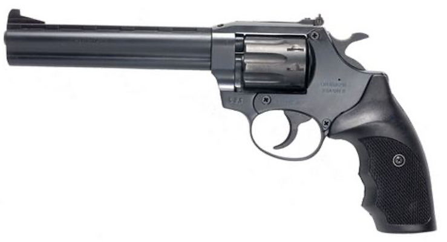

Принцип перезарядки револьвера – откидывающийся в сторону барабан.

37 мм
116 мм
152 мм
9 шт
ширина
высота
длина ствола
патронов
РФ-461 предназначается для спортивно-тренировочной стрельбы с использованием 4 мм патрона Флобера, снаряженным свинцовым шариком 0,5 г и пиротехническим зарядом.
Правила применения:
Принцип перезарядки револьвера – откидывающийся в сторону барабан.